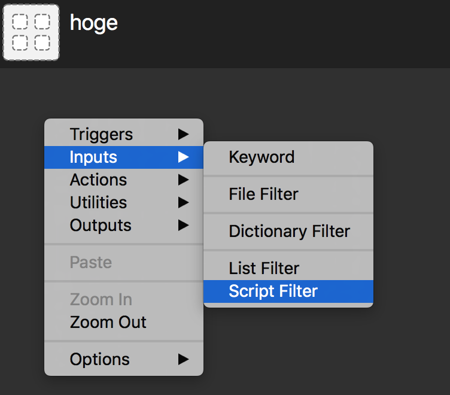
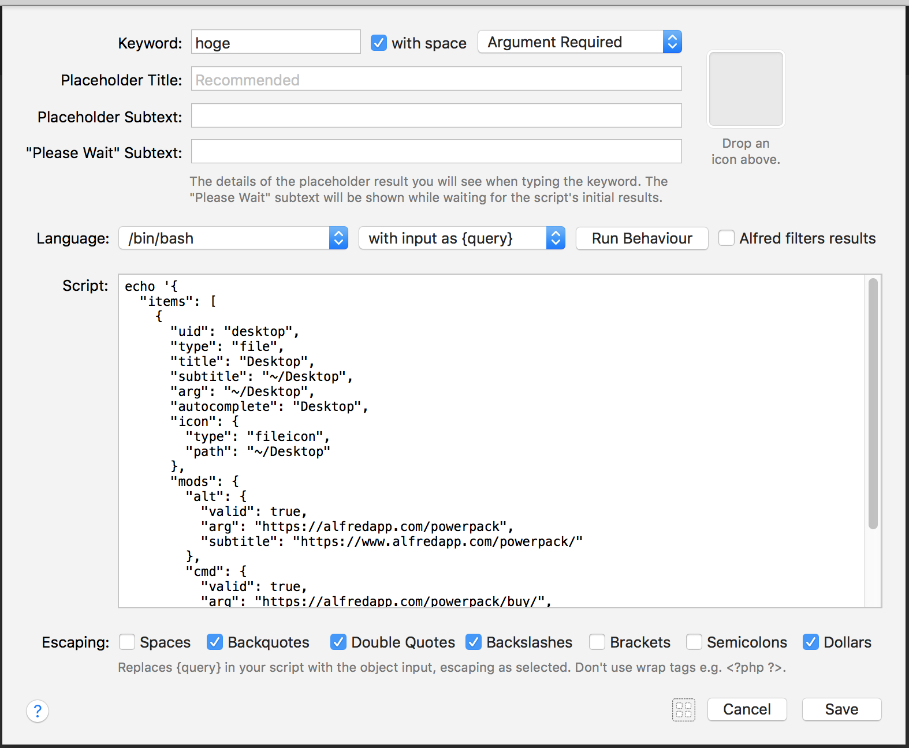
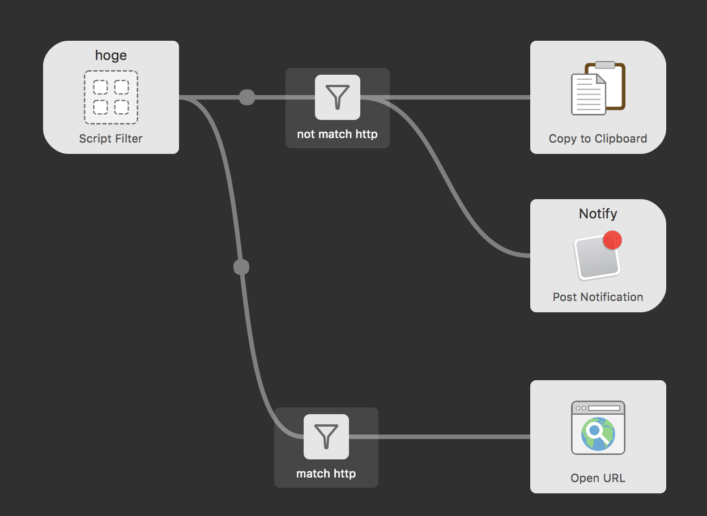
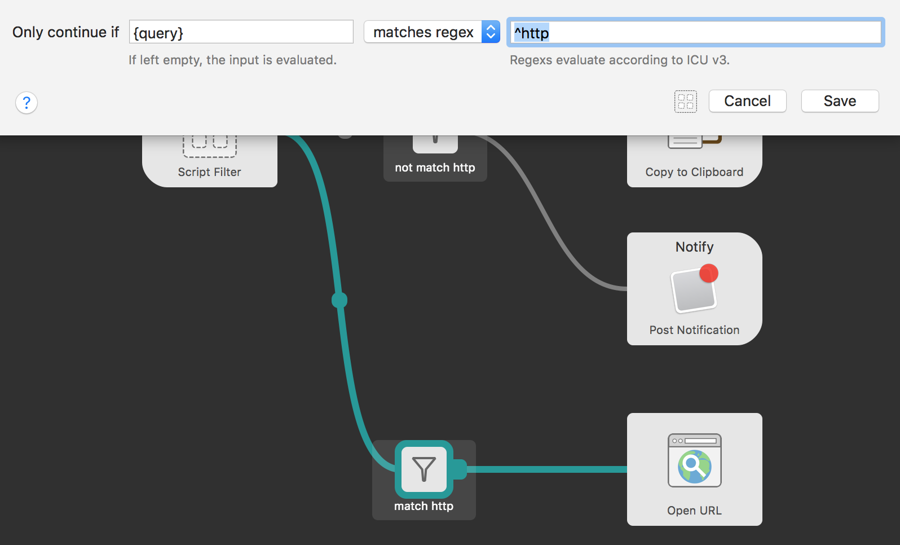
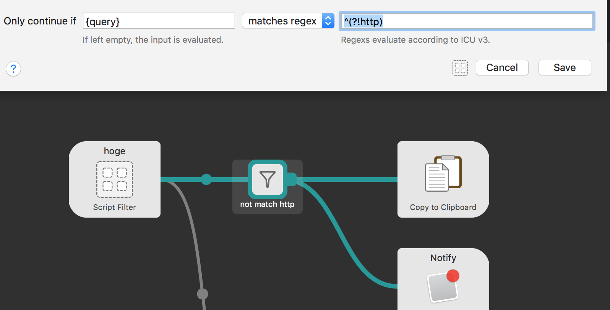
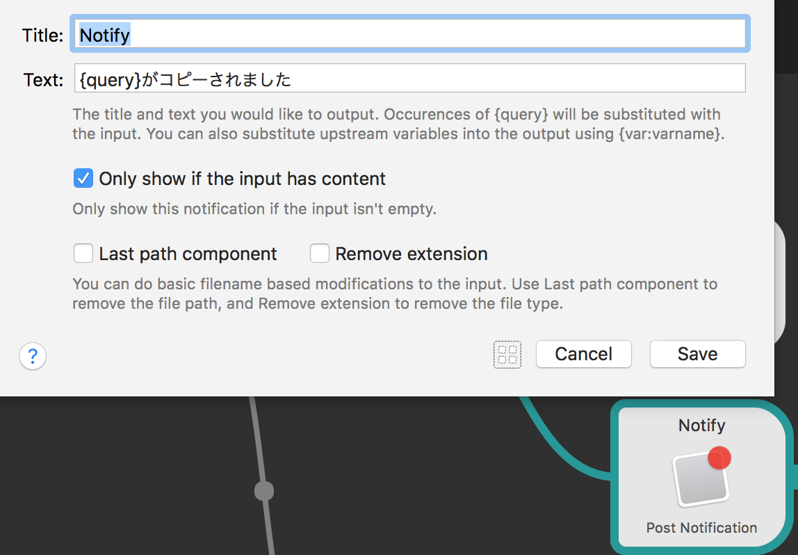
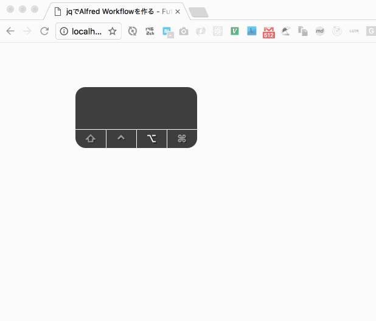
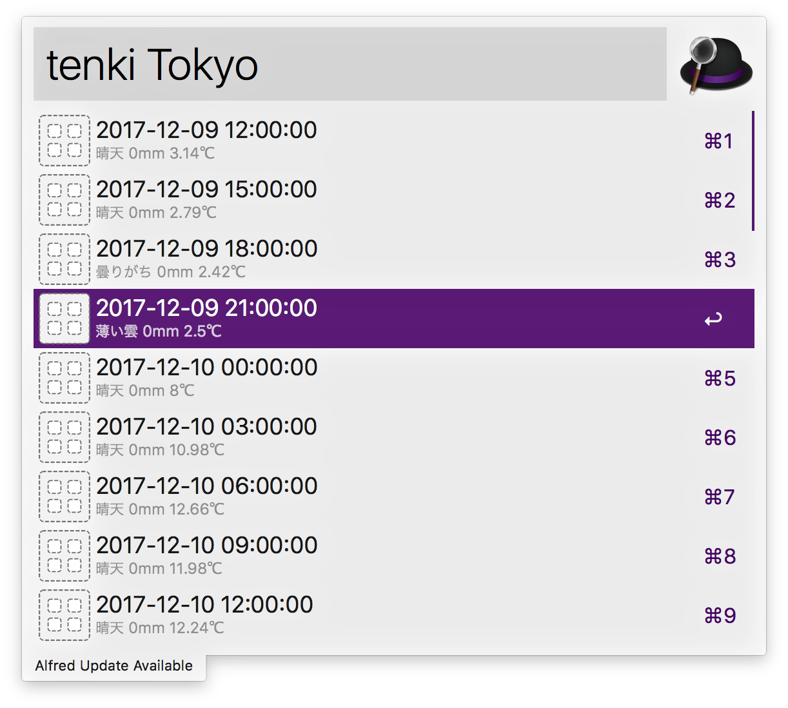

![Future [ _ ]](/images/picture.png)
jqでAlfred Workflowを作る
AlfredにはWorkflowというものがあってPowerpackを購入したユーザーが使える。
いろいろあるのでAwsome Workflowのリンクを貼っておく。
とてもいいアプリなので35ユーロになるけど、Mega Supppoterを購入することをおすすめする。Free lifetime Upgrades のオプションになる。
Workflowは、コードを見るとPHP実装だったり、Ruby実装だったりで作るのがめんどくさそうにみえる。
今回は、そういった言語を使わなくてもスクリプトを組み合わせるだけでAPIを使ったWorkflowをScript Filter JSON Formatを使うことで簡単に作った話をしようと思う。
Script Filterは標準出力に以下のような出力を行なうだけでいい。
JSON
サンプル
{
"items": [
{
"uid": "desktop",
"type": "file",
"title": "Desktop",
"subtitle": "~/Desktop",
"arg": "~/Desktop",
"autocomplete": "Desktop",
"icon": {
"type": "fileicon",
"path": "~/Desktop"
},
"mods": {
"alt": {
"valid": true,
"arg": "https://alfredapp.com/powerpack",
"subtitle": "https://www.alfredapp.com/powerpack/"
},
"cmd": {
"valid": true,
"arg": "https://alfredapp.com/powerpack/buy/",
"subtitle": "https://www.alfredapp.com/powerpack/buy/"
}
}
}
]
}属性
| key | type | description |
|---|---|---|
| uid | string | alfredのソート機能のために振るunique id |
| type | string | fileをしているとAlfredにファイルとして扱われる（「Finderで開く」アクションが有効になるなど） |
| title | string | リストの一行目 |
| subtitle | string | リストの二行目 |
| arg | string | 次のブロックへ渡る値（引数） |
| autocomplete | string | オートコンプリート（Tabキー）を押したときに補完されるテキスト |
| icon | object | 画像 ※ pathにはURLを指定できない |
| valid | boolean | Enterキーをおした時に反応するか |
| mods | obejct | 指定したキーをおした時に valid , arg , subtitle を切り替えれる |
試しに動かしてみる。
Script Filterを作る。

スクリプトは標準出力に指定された形式のJSONを出力するだけでいい。とりあえず echo '{sample json}' といった感じ。

Workflow全体はこんな感じになっているのが基本だと思う。

URLだったらブラウザで開き、それ以外だったら通知とともにクリップボードにはいる。
それぞれのオブジェクトの設定は以下のような感じ
Filter
URLではないフィルター: {query} matches regex ^(?!http)

URL フィルター: {query} matches regex ^http

Outputs
通知の設定

動作はこんな感じになる。

あとはいい感じのJSONをなにかしらで生成するといい。curlとjqが手軽に使えておすすめ。
今回は天気予報 Workflowsを作ろうと思うのでOpen Weather MapのAPIを叩いてみた。
$ curl -s "http://api.openweathermap.org/data/2.5/forecast?q=Tokyo&units=metric&&lang=ja&appid=[appid]" | jq . > tenki.jsonこのJSONをさきほどのJSONに合うようにjqで整形する。
$ cat tenki.json | /usr/local/bin/jq '{
items: (
.list | map({
title: .dt_txt,
subtitle: "\(.weather[].description) \(if .rain == {} or .rain == null then 0 else .rain["3h"] end)mm \(.main.temp)℃"
})
)
}'
{
"items": [
{
"title": "2017-12-09 09:00:00",
"subtitle": "晴天 0mm 4.7℃"
},
...これをScript Filterのスクリプトにする。
curl -s "http://api.openweathermap.org/data/2.5/forecast?q={query}&units=metric&&lang=ja&appid=[appid]" | /usr/local/bin/jq '{
items: (
.list | map({
title: .dt_txt,
subtitle: "\(.weather[].description) \(if .rain == {} or .rain == null then 0 else .rain["3h"] end)mm \(.main.temp)℃"
})
)
}'
これで東京の天気を表示してみる。

今回作ったWorkflowはこちら。APIキーは[appid]のままなのでそのままでは動かない。
すげーしょうもないサンプルコードになってしまったので、魅力が伝わらないかもしれない。 自分は社内の管理画面を開くのが面倒だったのでそれを簡単にAlfred Workflow化したりして便利だった。
所感
ビジュアルプログラミングだったの画像を貼る必要があり記事を書くのが億劫だった。ただ、すごく便利だと思うので、何かしら便利なWorkflowが作れたら公開してほしい。自分が使いたいので。
参考
- jq コマンドを使う日常のご紹介 - Qiita
- jqは便利